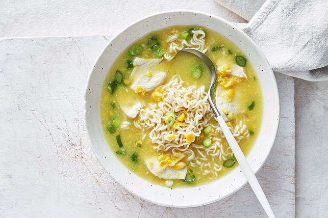

Chicken and Corn Noodle Soup

Ready in just 15 minutes, this quick and easy chicken and corn soup is perfect for busy weeknights. Better yet, it tastes great too!
Ingredient
- 2 x 300g cans creamed corn
- 750ml (3 cups) Massel chicken style liquid stock
- 400g chicken breast, thinly sliced
- 2 x 69g pkts chicken wholegrain instant noodles, broken
- 2-3 green shallots, sliced, plus extra sliced, to serve
Steps
- Combine the creamed corn and chicken stock in a large saucepan over medium-high heat. Bring to a simmer.
- Add the chicken and simmer, stirring, for 2 minutes.
- Add the noodles, discarding flavour sachet, and simmer for a further 4 minutes or until the chicken is cooked through and the noodles are soft. Add the shallot and cook for 1 minute.
- Divide the soup among serving bowls and serve with extra shallot.